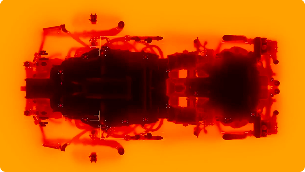
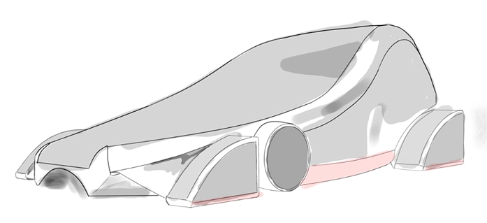
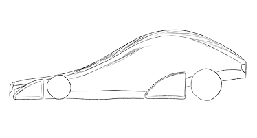
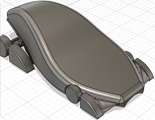
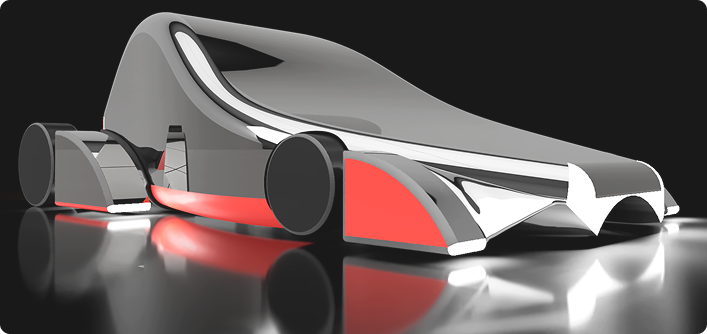
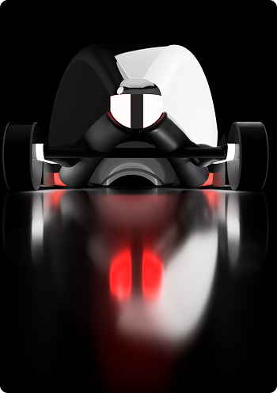
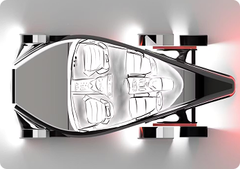
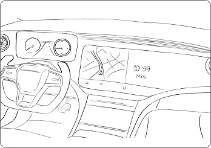
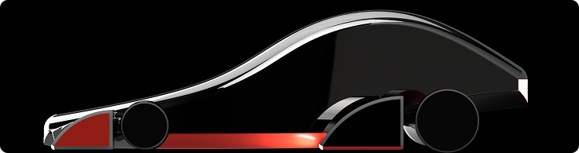

AUTOMOTIVE × DESIGN ENGINEERING
Anemos
Exploring what happens when aerodynamic thinking becomes a design constraint.
TL;DR
Anemos is an electric / solar vehicle concept developed through a combination of automotive design, surface development, CAD modelling, engineering calculations, battery considerations, and aerodynamic simulation.
Rather than treating styling and engineering as separate stages, the project explored how form could evolve alongside performance.
Background
Designing a vehicle isn't only about how it looks.
Every surface on a vehicle interacts with air, weight, structure, packaging, and performance.
For Anemos, the design challenge was to explore an aerodynamic electric vehicle while working within real engineering constraints.
Problem
How do you make an aerodynamic vehicle feel designed rather than engineered?
Every surface on a vehicle interacts with air, weight, structure, packaging, and performance.
For Anemos, the design challenge was to explore an aerodynamic electric vehicle while working within real engineering constraints.
Process
Designing Anemos
-
Starting with the silhouette
The first stage focused on establishing a vehicle proportion that could accommodate the required components while creating a strong aerodynamic profile.
-
Developing the surfaces
The body was developed in Fusion 360 with attention to curvature, continuity, proportions, and aerodynamic flow.
Instead of designing a surface and checking it later, simulation became part of the iteration.
-
Testing the form
Simulation and calculations helped evaluate how the changing geometry affected performance.
The important shift was from:
Design → Test
to:
Design → Simulate → Reconsider → Refine
-
Thinking beyond the shell
Battery considerations and engineering constraints influenced the final form as much as aesthetics did.
The result is a concept positioned between automotive design and engineering exploration.



Final Product
The Anemos
A symphony of innovation and emotion, Anemos reimagines the bond between machine and movement in the age of electrification. It is not just a vehicle, it is an idea: of sustainability without compromise, of performance without pollution, of silence that speaks power.
For those who believe that progress should be beautiful and efficiency should be exhilarating, Anemos is a return, not to the past, but to the purity of purpose. With a sculpted teardrop silhouette born from the wind itself, and a chassis woven from the lightest of materials, Anemos is the art of motion elevated to modern sculpture.
Driven by a next-generation dual battery system and optimized for aerodynamic perfection, it delivers up to 1000 km of range, while its intelligent core learns from you, charges with the sun, and returns energy to your home. No engine roar, no emissions, just seamless propulsion and the quiet power of innovation.
This is Anemos. Crafted for the conscious driver. Engineered for a world reborn.




Reflections
Simulation changed the way I looked at form.
A surface can look right and still perform poorly.
Anemos pushed me to think of visual design as something that can be tested, measured, and iterated, rather than evaluated only through aesthetics.
